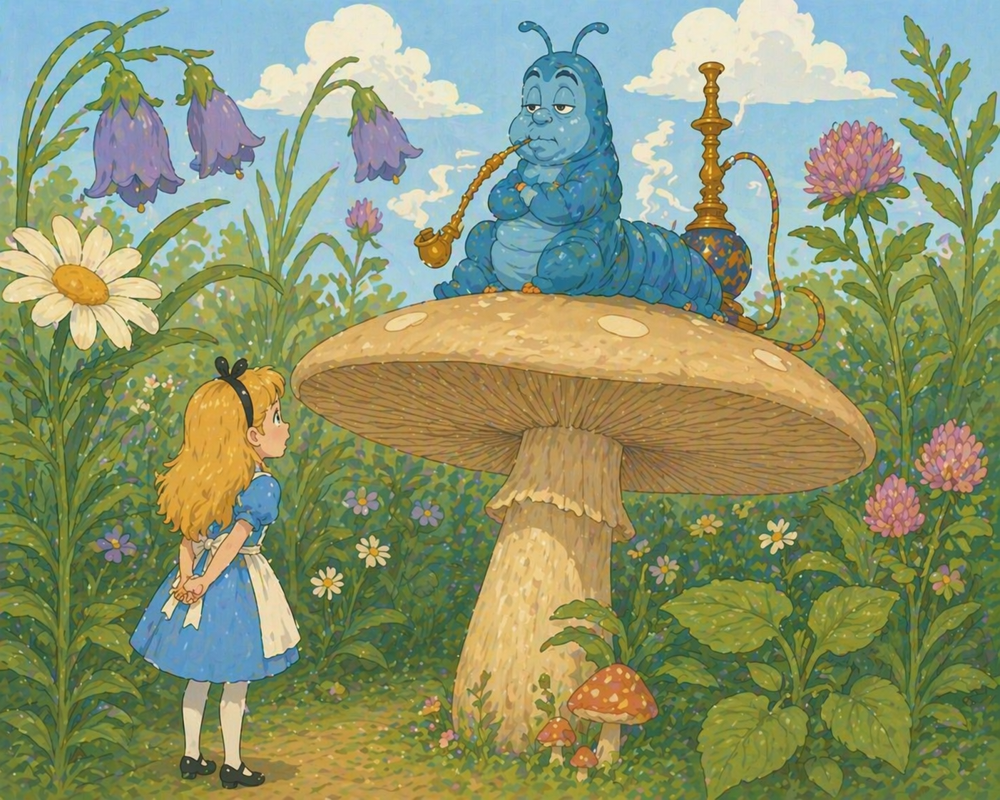
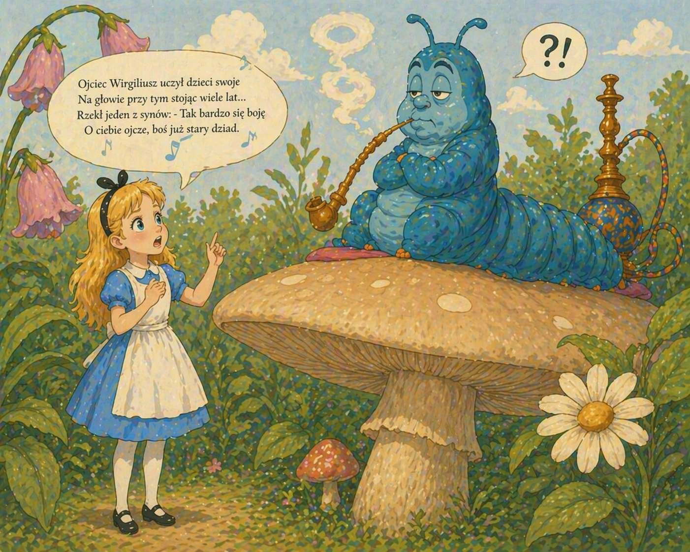
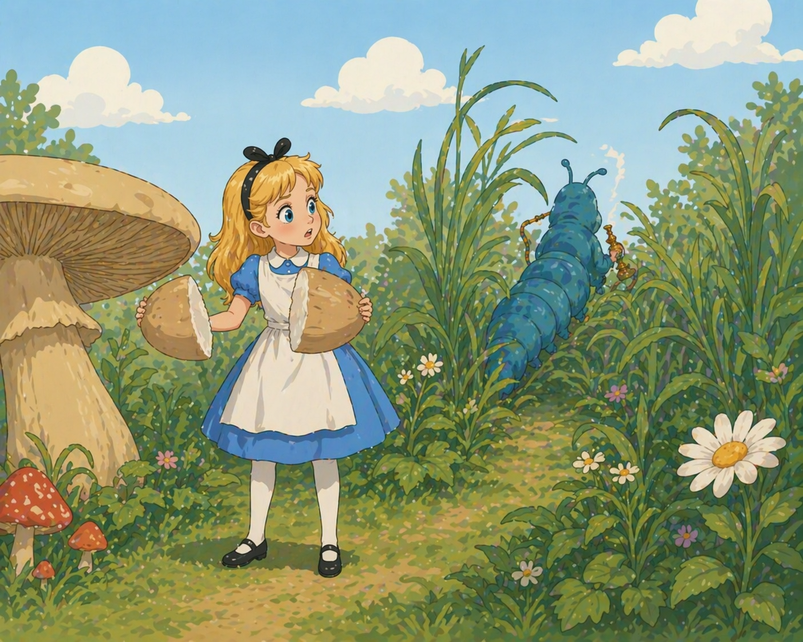
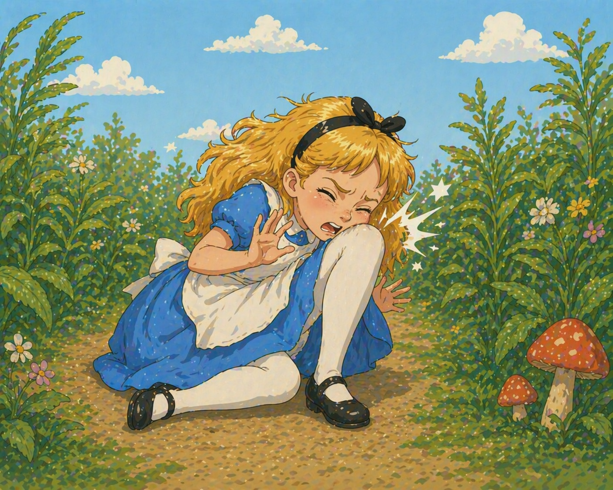
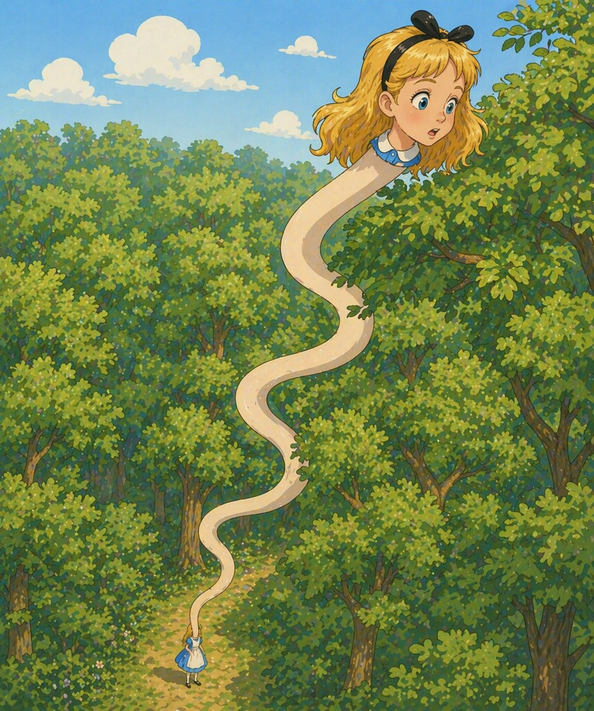
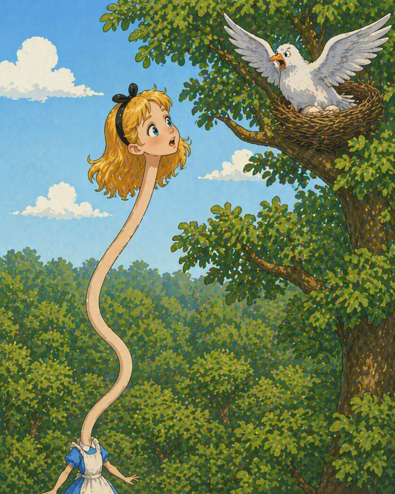
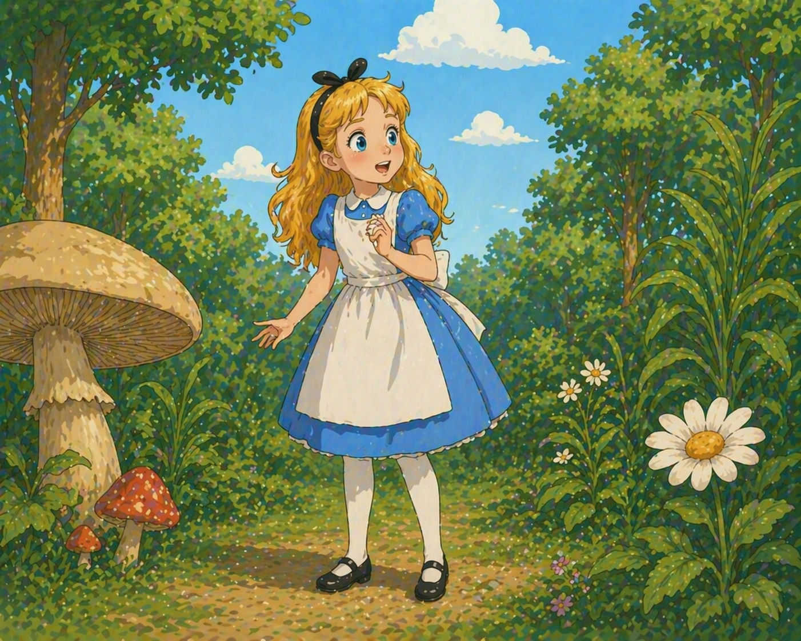

🎧 Слушай главу
Pan Gąsienica i Alicja przypatrywali się sobie nawzajem przez kilka minut w zupełnym milczeniu. Na koniec pan Gąsienica wyjął z ust fajkę i odezwał się słabym, śpiącym głosem:
- Kim jesteś?
Nie było to zbyt zachęcające. Alicja odpowiedziała nieśmiało:
- Ja... ja naprawdę w tej chwili nie bardzo wiem, kim jestem, proszę pana. Mogłabym powiedzieć, kim byłam dziś rano, ale od tego czasu musiałam się już zmienić wiele razy.
- Co chcesz przez to powiedzieć? - zapytał surowo pan Gąsienica. - Wytłumacz się!
- Nie mogę się wytłumaczyć - odrzekła Alicja - ponieważ, jak pan widzi, nie jestem sobą.
- Nic nie rozumiem - rzekł pan Gąsienica.
- Obawiam się, że nie będę mogła wytłumaczyć panu tego jaśniej, ponieważ, szczerze mówiąc, sama nic nie rozumiem. Te ciągłe zmiany wzrostu działają na człowieka raczej ogłupiająco.
- Nie widzę powodu - rzekł pan Gąsienica.

- Być może, że nie zaznał pan tego dotychczas - odparła uprzejmie Alicja - ale kiedy zmieni się pan w poczwarkę, a później w motyla, to będzie to dla pana czymś również bardzo dziwnym, prawda?
- Nieprawda - rzekł pan Gąsienica.
- Być może, ale pan te sprawy odczuwa inaczej. W każdym razie byłoby to dziwne dla mnie.
- Dla ciebie? - rzekł pan Gąsienica pogardliwie. - A kim ty właściwie jesteś?
W ten sposób powrócili na nowo do początku rozmowy. Opryskliwe odpowiedzi pana Gąsienicy mocno już zirytowały Alicję, powiedziała więc z naciskiem:
- Sądzę, że to pan powinien mi się przedstawić pierwszy.
- Dlaczego? - zapytał pan Gąsienica.
Była to znowu sprawa nader kłopotliwa. Widząc, że pan Gąsienica jest w bardzo kiepskim humorze, Alicja odwróciła się i zamierzała odejść.
- Czekaj! - zawołał nagle pan Gąsienica. - Mam ci coś ważnego do powiedzenia.
Brzmiało to dość obiecująco. Alicja zawróciła więc i zmieniła się w słuch.
- Trzymaj nerwy na wodzy - rzekł pan Gąsienica.
- Czy to już wszystko? - zapytała Alicja, usiłując opanować gniew.
- Nie - odparł pan Gąsienica.
Alicja pomyślała, że właściwie może zaczekać na dalszy ciąg tej rozmowy, bo i tak nie ma nic lepszego do roboty. Przez parę minut pan Gąsienica milcząco pykał z fajki, po czym wyjął cybuch z ust i zapytał:
- Więc wydaje ci się, że nie jesteś sobą?
- Obawiam się, że nie jestem, proszę pana - odpowiedziała Alicja. - Nie pamiętam już niczego w sposób normalny, zmieniał wzrost co dziesięć minut.
- Czego nie pamiętasz? - zapytał pan Gąsienica.
- Próbowałam na przykład powiedzieć "Pan kotek był chory", ale wyszło jakoś inaczej.
- Powiedz "Ojca Wirgiliusza" - rzekł pan Gąsienica.
Alicja splotła dłonie i zaczęła deklamować:
Ojciec Wirgiliusz uczył dzieci swoje
Na głowie przy tym stojąc wiele lat
Rzekł jeden z synów: - Tak bardzo się boję
O ciebie ojcze, boś juz stary dziad.

- W latach młodości - ojciec mu odpowie -
Bywałem nieraz w strachu o swój mózg,
Lecz dziś, gdy widzę, że mam pusto w głowie,
Ćwicząc, najwyżej słyszę wody plusk.
- Jesteś już stary, jak się wyżej rzekło,
I gruby - wybacz - że aż brak mi słów,
Ale koziołki fikasz z pasją wściekłą.
Skąd się, mój ojcze, bierze zwyczaj ów?
- W mojej młodości - rzecze mędrzec siwy -
Nacierać zwykłem co dzień członki swe,
Zaś używałem tej oto oliwy,
Chcesz, to ci sprzedam butelkę lub dwie?
- Masz ojcze, szczęki słabe ze starości
I zdolnyś chyba łykać tylko ciecz,
Ale zeżarłeś gęś z dziobem i kośćmi,
Przyznasz mi, ojcze, że to dziwna rzecz.
- Za młodu - rzecze starzec - prowadziłem
Dyskusji z żoną codziennie ze sześć
I to mym szczękom dało ową siłę,
Która pozwala dziś mi gęsi jeść.
- Weź pod uwagę, ojcze, ilość lat twą,
W tym wieku oczom bystrości już brak,
A ty węgorza utrzymujesz łatwo
Na czubku nosa - powiedz, ojcze, jak?
- Jest w domu dzieci sto dwadzieścia troje
- ojciec odpowie - i mam pytań dość.
Już mi obrzydły idiotyzmy twoje,
Więc radzę, zmykaj, zanim wpadnę w złość!
– To się zupełnie nie zgadza – rzekł pan Gąsienica.
– Niezupełnie się zgadza – poprawiła nieśmiało Alicja. – Niektóre słowa są inne.
– To brzmi inaczej od początku do końca – zaopiniował pan Gąsienica, po czym zapanowało parominutowe milczenie.
Wreszcie odezwał się znowu:
– A jakiego wzrostu chciałabyś być?
– Właściwie jest mi wszystko jedno – odpowiedziała Alicja. - Nie chciałabym tylko zmieniać się tak często, wie pan…
–Nie wiem – rzekł pan Gąsienica.
Alicja nie odrzekła na to ani słowa. Nigdy w życiu nie spotkała się jeszcze z kimś tak nieuprzejmym i czuła, że zaczyna tracić panowanie nad sobą.
– Czy twój obecny wzrost ci odpowiada? – zapytał pan Gąsienica.
– Chciałabym być troszeczkę większa, jeśli nie ma pan nic przeciwko temu. Dziesięć centymetrów, wie pan, to nie jest zbyt dobry wzrost.
– To jest świetny wzrost – odpowiedział gniewnie pan Gąsienica. (On sam miał właśnie dziesięć centymetrów wzrostu).
– Ale ja nie jestem do takiego wzrostu przyzwyczajona – rzekła płaczliwie Alicja, po czym dodała cicho: – Jakżebym chciała, żeby te zwierzęta nie obrażały się tak łatwo.
– Przyzwyczaisz się do tego wzrostu z czasem – rzekł pan Gąsienica, wkładając cybuch w usta i pykając wolno z fajki.
Alicja czekała cierpliwie, dopóki pan Gąsienica się znowu nie odezwie. Po minucie wyjął cybuch z ust, ziewnął, przeciągnął się, po czym złażąc z grzyba rzucił jakby od niechcenia:
– Od jednej strony się rośnie, od drugiej – maleje.

„Od jednej i drugiej strony, ale czego?” – pomyślała Alicja.
– Grzyba – odpowiedział pan Gąsienica, jak gdyby usłyszał pytanie, po czym znikł w trawie.
Alicja przypatrywała się przez chwilę grzybowi, starając się rozróżnić dwie strony, o których wspominał pan Gąsienica. Ale jak to zrobić, skoro grzyb był okrągły? Na koniec objęła go rękami, jak najdalej mogła, i odłamała po kawałku z obu końców.
–Jak teraz odróżnić te kawałki? – zapytała Alicja odgryzając odrobinę grzyba z prawej ręki. W tej samej chwili poczuła gwałtowny ból: kurcząc się stuknęła podbródkiem o kolano!

Alicja przeraziła się nie na żarty tą nagłą zmianą. Wiedziała, że nie ma chwili do stracenia, usiłowała więc odgryźć odrobinę z drugiego kawałka. Podbródek jej przyległ już tymczasem tak mocno do stopy, że zaledwie mogła otworzyć usta. Na koniec udało jej się przełknąć kawałek grzyba z lewej ręki.
* * *
– Nareszcie mogę swobodnie poruszać głową! – krzyknęła Alicja. Ale zachwyt zmienił się w przerażenie, kiedy po chwili zorientowała się, że jej ramiona znikły gdzieś w niewytłumaczalny sposób. Patrząc w dół widziała jedynie szyję potwornej długości, która wyrastała na kształt olbrzymiej łodygi z morza zielonych liści, szemrzącego gdzieś w dole.
– Co to właściwie może być? – powiedziała na głos Alicja. – I gdzie podziały się moje ramiona? A moje ręce – jakżebym chciała je zobaczyć! – To mówiąc podniosła ręce, ale nie ujrzała nic, poza jakimś lekkim poruszeniem pośród odległych liści.
Jeśli nie można unieść rąk do wysokości głowy, to może uda się przynajmniej pochylić głowę ku rękom? Czyniąc to Alicja stwierdziła z zachwytem, że szyja jej wygina się z łatwością we wszystkich kierunkach niczym żmija. Wygięła ją więc w śliczny zygzak i myszkowała głową między listowiem (okazało się, że były to korony drzew, pod którymi Alicja przechadzała się jeszcze tak niedawno). Nagle usłyszała ostry syk i z przerażeniem cofnęła głowę. Naprzeciw ujrzała dużą Gołębicę bijącą gwałtownie skrzydłami.

– Żmija! – wrzasnęła Gołębica.
– Nie jestem żmiją – odparła z godnością Alicja. – Proszę zostawić mnie w spokoju.
– Żmija – powtarzam – rzekła Gołębica pokorniejszym już tonem i dodała z nagłym szlochem: – Próbowałam już wszystkich sposobów, ale widać nie ma na to rady!
– Nie wiem, o czym pani mówi – rzekła Alicja.
– Próbowałam już chronić się między korzeniami drzew, próbowałam odgradzać się żywopłotem – żaliła się Gołębica, nie zwracając żadnej uwagi na słowa Alicji – wszystko na próżno!
Alicja była coraz bardziej zdumiona, ale uważała, że dopóki Gołębica nie skończy swych biadań, wszelkie wyjaśnienia są bezcelowe.
–Tak jakby nie było dość kłopotu z wysiadywaniem jajek! – skarżyła się dalej Gołębica. – Trzeba jeszcze dniem i nocą strzec się żmij! Już od trzech tygodni nie zmrużyłam oka!
– Naprawdę, bardzo mi przykro – rzekła Alicja, która zaczynała na koniec pojmować, o co chodzi.
– Wybrałam sobie najwyższe drzewo w całym lesie – biadała Gołębica – już myślałam, że będę miała trochę spokoju, a tu raptem znowu żmija wpełza w moje gniazdo, i to prosto z nieba! Precz, żmijo!
– Ależ ja nie jestem żmiją – rzekła Alicja. – Ja jestem… jestem…
– No, kim jesteś? Widzę, że usiłujesz coś kręcić!
– Jestem małą dziewczynką – rzekła niepewnie Alicja, przypominając sobie wszystkie przeobrażenia, jakich doznała od rana.
– Patrzcie ją! Kto by w to uwierzył! – krzyknęła Gołębica tonem najgłębszej pogardy. – Widziałam już w życiu dość małych dziewczynek, ale nie spotkałam się nigdy z dziewczynką o takiej szyi! Nie, nie! Ty na pewno jesteś żmiją, nie próbuj nawet zaprzeczać! Mam nadzieję, że nie będziesz mi wmawiać, że nie znasz smaku jajka!
– Oczywiście, że znam smak jajka – rzekła Alicja z wrodzoną sobie prawdomównością – ale małe dziewczynki jedzą nie mniej jajek niż żmije.

– Nigdy w to nie uwierzę – rzekła Gołębica – ale jeśli tak czynią, to są one również rodzajem żmij. To wszystko, co mam do powiedzenia.
Było to dla Alicji coś zupełnie nowego. Zamilkła więc na chwilę, a Gołębica dodała triumfująco:
– Wiem doskonale - że szukasz jajek. Więc cóż za różnica, czy jesteś małą dziewczynką, czy żmiją?
– Dla mnie jednak to jest różnica – rzekła szybko Alicja. – Poza tym wcale nie szukam jajek. A gdybym nawet szukała, to nie łaszczyłabym się na pani jajka: nie lubię ich na surowo.
– W takim razie wynoś się – rzekła Gołębica obrażonym tonem, po czym schowała się w swym gnieździe.
Alicja wyruszyła tymczasem w dalszą drogę między drzewami, co odbywało się bardzo wolno. Szyja jej bowiem zaplątywała się ciągle w gałęzie i Alicja musiała zatrzymywać się, aby ją odplątywać.
Po chwili przypomniała sobie, że trzyma wciąż w rękach kawałeczki czarodziejskiego grzyba. Zabrała się więc do dzieła z całą ostrożnością^ odgryzała po małej odrobince z każdej cząsteczki i to rosnąc, to znów malejąc, zdołała wreszcie osiągnąć normalną wysokość.
Odwykła już bardzo od swego wzrostu., tak że z początku było jej dość dziwnie. Przyzwyczaiła się jednak po paru minutach i zaczęła, jak zwykle, rozmawiać ze sobą:
– W ten sposób połowa mojego planu byłaby wykonana! Jakże zdumiewające są te ciągłe zmiany! Nie mogę przewidzieć, co się ze mną stanie za chwilę! Jak to przyjemnie być z powrotem sobą! Teraz trzeba się jakoś dostać do ogrodu – ale jak, właśnie jak? – To mówiąc znalazła się nagle na otwartej przestrzeni. Pośrodku zauważyła domek mniej więcej metrowej wysokości. „Nie będę mogła wejść do tego domku – pomyślała Alicja. – Jestem na to obecnie za duża. Jego lokatorzy zwariowaliby chyba ze strachu na mój widok!” Odgryzła więc kawałek grzyba z prawej ręki i podeszła bliżej dopiero wtedy, gdy miała odpowiedni wzrost (to znaczy około dwudziestu centymetrów).
